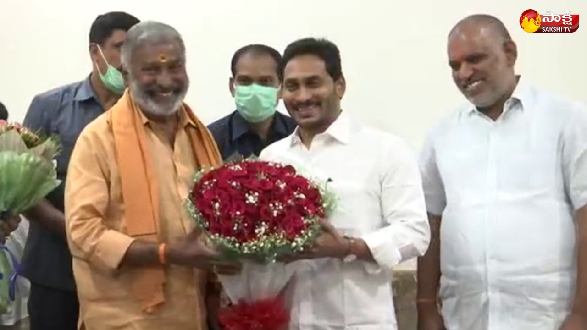

Here are the details about the Political Representatives of the PidigovulavariPalli:
- Bhaskar Pidigovula
- Ramachandra Majjiga
- Ramachandra Agilineni
- Venkatrayalu Pidigovula
- Sahadevaiah Pidigovula
- Sriramulu Pidigovula
- Venkataramana Pidigovula
- Narasimhulu Vunta
- Chennakeshavulu Vunta
- Vishwanatha Majjiga
- Ganguraju Majjiga
- Gangadhara Agilineni
- Munishwara Agilineni
- Aruna Majjiga
- HariBabu Agilineni
✴The Political Representatives of the village are:
✴The Volunteers of the village are:

PIDIGOVULAVARIPALLI